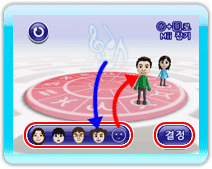
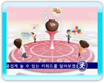
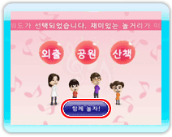

「즐거운 길잡이」에서는 한 명 또는 복수의 플레이어에게 그날의 행운을 부르는 놀이에 관한 키워드 3개를 제시해 줍니다. 무엇을 하고 놀아야 좋을지 망설여질 때 참고해 주세요. 키워드를 알아볼 Mii는 1~6명까지 선택할 수 있으며, 키워드는 Mii의 인원수나 조합에 따라 달라질 수 있습니다.
9 |
즐거운 길잡이 |
 |
|
1. 아이콘을 선택한다. 즐거운 길잡이를 시작하려면 메인 화면(→P.5: 메인 화면 설명)에서 아이콘을 포인트하고 
2. Mii를 선택한다. 즐거운 키워드를 알아볼 플레이어의 Mii를

3. 즐거운 키워드를 알아본다. Mii의 선택이 끝나면 즐거운 키워드를 알아보기 위한 애니메이션이 시작됩니다. ※ 
4. 즐거운 키워드를 확인한다. 행운을 부르는 놀이에 관한 키워드가 3개 제시됩니다. 를 포인트하고 |
 |
 |
 |